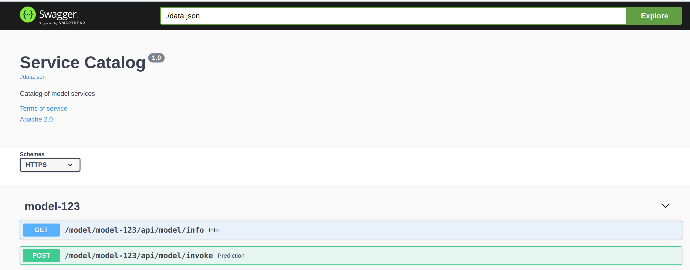
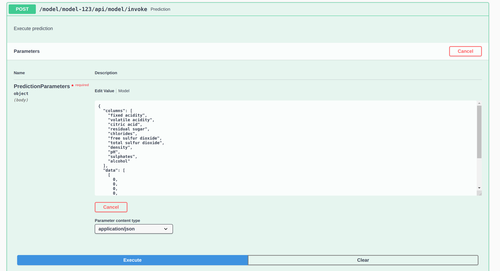
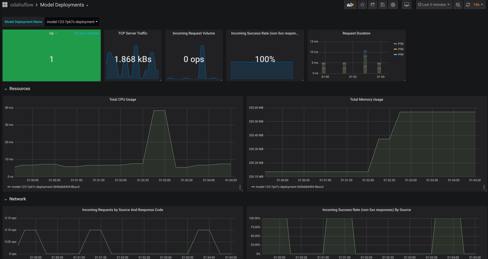

Model Deployments¶
Odahu-flow Model Deployment API allows deploy of ML models in a Kubernetes cluster. Additionally, it provides the following set of features:
- Feedback loop
- Scale to zero
- Dynamic Model swagger
- Monitoring of Model Deployment
General deployment structure¶
kind: ModelDeployment
# Some unique value among all deployments
id: wine-12345
spec:
# Model image is required value. Change it
image: gcr.io/project/test-e2e-wine-1.0:b591c752-43d4-43e0-8392-9a5715b67573
# If the Docker image is pulled from a private Docker repository then
# you have to create a Odahu-flow connecton and specify its id here.
# imagePullConnID: test
# Compute resources for the deployment job.
resources:
limits:
cpu: 1
memory: 1Gi
requests:
cpu: 1
memory: 1Gi
# Minimum number of replicas
minReplicas: 0
# Maximum number of replicas
maxReplicas: 1
Model Deployment management¶
Model Deployments can be managed using the following ways.
Swagger UI¶
ModelDeployments are available in the Swagger UI at http://api-service/swagger/index.html URL.
Odahu-flow CLI¶
Odahuflowctl supports the Model Deployment API. You must be logged in if you want to access the API.
Getting all model deployments in json format:
odahuflowctl deployment get --format json
Getting the model name of the model deployments:
odahuflowctl deployment get --id tensorflow-cli -o 'jsonpath=[*].spec.model.name'
- Creating of a training from train.yaml file:
odahuflowctl deployment create -f train.yaml
- All model deployments commands and documentation:
odahuflowctl deployment --help
- All model deployments commands and documentation:
odahuflowctl deployment --help
- Getting a model deployment information:
odahuflowctl model info --md wine
- Making a prediction:
odahuflowctl model invoke --md wine --file request.json
JupyterLab¶
Odahu-flow provides the Jupyterlab extension for interacting with Model Deployments API.
Service Catalog¶
Service catalog provides a Swagger UI for Model Deployments.
Note
The model must provide input and output samples to appear in the Service Catalog
Service catalog Swagger UI:
Example of a prediction request:
Grafana Dashboard¶
Out of the box, Odahu-flow provides the Grafana Model Deployment dashboard. It contains the charts with following system metrics:
- availability
- replicas
- CPU
- memory
- number of failed HTTP requests
- latency
- …
Example of the dashboard:
Feedback¶
Model Feedback provides a view of performance over all stages of model lifecycle.
The mechanism is simple:
- Ask Deploy for prediction (with or without
Request-Idprovided) - Send prediction feedback to Odahu-flow (with
Request-Idreturned from previous step) - Odahu-flow stores the prediction and feedback to a configurable location
Important
This flow requires feedback to be enabled in values.yaml during Helm chart installation
Protocol¶
- If prediction is requested without Request-ID:
Request-IDheader with random ID is added to the request. Otherwise, Request-ID is not generated. - Request and response are stored on configured external storage (eg. S3, GCS)
3. User sends Model Feedback as an argument to the feedback endpoint. (Feedback can be arbitrary JSON.) 5. All Feedback is persisted on external storage and can be used by models during subsequent Trains.
Working example¶
Making a prediction request:
curl -X POST -vv "https://``cluster-url``/model/``model-deployment-id``/api/model/invoke" \
-H "Authorization: Bearer ``JWT`` \
-H "accept: application/json" \
-H "Content-Type: application/json" \
-d "{ \"columns\": [ \"fixed acidity\", \"volatile acidity\", \"citric acid\", \"residual sugar\", \"chlorides\", \"free sulfur dioxide\", \"total sulfur dioxide\", \"density\", \"pH\", \"sulphates\", \"alcohol\" ], \"data\": [ [ 0, 0, 0, 0, 0, 0, 0, 0, 0, 0, 0 ] ]}"
The response contains a generated Request-Id header.
HTTP/2 200
server: nginx/1.13.12
date: Tue, 17 Dec 2019 10:58:49 GMT
content-type: application/json
content-length: 45
model-name: test-e2e-wine
model-version: 1.0
request-id: 6fa1f636-fb80-9979-b8c6-d78f5e90f0c1
x-envoy-upstream-service-time: 43
strict-transport-security: max-age=15724800; includeSubDomains
{"prediction": [6.0], "columns": ["quality"]}
Requests and responses are persisted in a bucket. (File name ~= /request_response/income/1.1/year=2019/month=07/day=24/2019072414_4.json)
The first file contains meta-information about request and response:
{
"request_id": "6fa1f636-fb80-9979-b8c6-d78f5e90f0c1",
"request_content": "{\"columns\": [\"alcohol\", \"chlorides\", \"citric acid\", \"density\", \"fixed acidity\", \"free sulfur dioxide\", \"pH\", \"residual sugar\", \"sulphates\", \"total sulfur dioxide\", \"volatile acidity\"], \"data\": [[12.8, 0.029, 0.48, 0.98, 6.2, 29, 3.33, 1.2, 0.39, 75, 0.66]]}",
"request_uri": "/model/test-e2e-wine/api/model/invoke",
"response_http_headers": {
":status": "200",
"date": "Tue, 17 Dec 2019 08:46:40 GMT",
"model-name": "test-e2e-wine",
"model-version": "1.0",
"server": "istio-envoy",
"connection": "close",
"content-length": "45",
"content-type": "application/json",
"request-id": "12dcddd5-771d-9fc0-b326-816211cf8172",
"x-envoy-upstream-service-time": "6"
},
"model_version": "1.0",
"request_http_headers": {
":method": "POST",
"x-scheme": "https",
"accept": "*/*",
"x-istio-attributes": "ClEKF2Rlc3RpbmF0aW9uLnNlcnZpY2UudWlkEjYSNGlzdGlvOi8vb2RhaHUtZmxvdy1kZXBsb3ltZW50L3NlcnZpY2VzL3Rlc3QtZTJlLXdpbmUKUwoYZGVzdGluYXRpb24uc2VydmljZS5ob3N0EjcSNXRlc3QtZTJlLXdpbmUub2RhaHUtZmxvdy1kZXBsb3ltZW50LnN2Yy5jbHVzdGVyLmxvY2FsCisKGGRlc3RpbmF0aW9uLnNlcnZpY2UubmFtZRIPEg10ZXN0LWUyZS13aW5lCjgKHWRlc3RpbmF0aW9uLnNlcnZpY2UubmFtZXNwYWNlEhcSFW9kYWh1LWZsb3ctZGVwbG95bWVudApPCgpzb3VyY2UudWlkEkESP2t1YmVybmV0ZXM6Ly9pc3Rpby1pbmdyZXNzZ2F0ZXdheS04NjlkYjdkOWJiLWpsemtyLmlzdGlvLXN5c3RlbQ==",
"knative-serving-namespace": "odahu-flow-deployment",
"x-envoy-original-path": "/model/test-e2e-wine/api/model/invoke",
":scheme": "http",
"x-forwarded-host": "odahu.example.com",
"x-original-uri": "/model/test-e2e-wine/api/model/invoke",
"user-agent": "python-requests/2.22.0",
"x-forwarded-port": "443",
"content-type": "application/json",
"x-b3-sampled": "1",
"content-length": "257",
"x-real-ip": "10.4.0.11",
"x-forwarded-for": "10.4.0.11,10.44.0.10",
"x-envoy-external-address": "10.44.0.10",
"x-request-id": "12dcddd5-771d-9fc0-b326-816211cf8172",
"x-forwarded-proto": "http",
":authority": "odahu.example.com",
"x-b3-traceid": "488abe197a652c2ce80e6b848a4c56e6",
":path": "/api/model/invoke",
"accept-encoding": "gzip, deflate",
"x-envoy-decorator-operation": "test-e2e-wine.odahu-flow-deployment.svc.cluster.local:80/model/test-e2e-wine/api*",
"x-b3-spanid": "e80e6b848a4c56e6",
"knative-serving-revision": "test-e2e-wine-l4xt7"
},
"response_status": "200",
"request_host": "odahu.example.com",
"model_name": "test-e2e-wine",
"request_http_method": "POST",
"time": "2019-12-17 08:46:40 +0000"
}
The second file contains the response body with the same Request-Id (File name ~= /response_body/income/1.1/year=2019/month=07/day=24/2019072414_1.json)
{
"request_id": "6fa1f636-fb80-9979-b8c6-d78f5e90f0c1",
"model_version": "1.0",
"model_name": "test-e2e-wine",
"response_content": "{\"prediction\": [6.0], \"columns\": [\"quality\"]}",
"time": "2019-12-17 08:46:40 +0000"
}
Working Example - Send Feedback as Payload¶
Send Model Feedback request:
curl -X POST -vv "${BASE_URL}/feedback/model/" \
-H "Authorization: Bearer ${JWT}" \
-H "x-model-name: income" \
-H "x-model-version: 1.1" \
-H "Request-ID: previous-prediction-id" \
-H 'Content-Type: application/json' \
-d '{"truthful": 1}'
Note that the -d argument can pass arbitrary JSON.
A successful feedback request will have the following properties:
- HTTP response: 200
- Response field
errorisfalse. - Response field
registeredistrue. - Response field
messageis what was sent to storage.
{
"message": {
"RequestID": "previous-prediction-id",
"ModelVersion": "1.0",
"ModelName": "test-e2e-wine",
"Payload": {
"json": {
"truthful": 1
}
}
}
}
File name ~= /feedback/test-e2e-wine/1.0/year=2019/month=11/day=23/2019072311_2.json will have a format like this,
with feedback stored in the payload field:
{
"request_id": "previous-prediction-id",
"model_version": "1.0",
"model_name": "test-e2e-wine",
"payload": {
"json": {
"truthful": 1.0
}
},
"time": "2019-12-17 20:08:05 +0000"
}